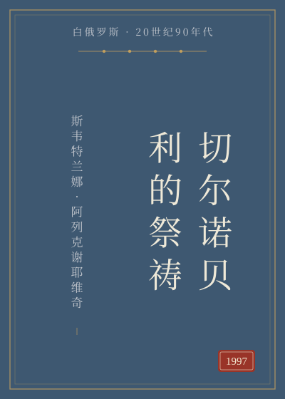
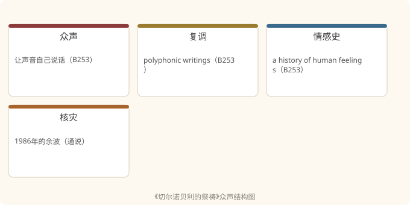

切尔诺贝利的祭祷
一、基本信息
| 作者 | 斯韦特兰娜·阿列克谢耶维奇 |
|---|---|
| 成书/出版 | 1997年（Britannica B253：Voices from Chernobyl (1997)——中译名通说待核） Svetlana Alexievich — Encyclopaedia Britannica（百科全书） |
| 国别/地区 | 白俄罗斯 |
| 时代 | 现当代 · 20世纪90年代 |
| 体裁 | 纪实文学（口述实录） |
| 语言 | 俄语 |

《切尔诺贝利的祭祷》众声结构图（主题·结构图）
二、创作背景
Britannica（B253）：Voices from Chernobyl (1997)——作者页列举（剧情/篇目细节通说待核）。
Britannica（B253）：其方法——'hybrid literary genre that evolved as the closest possible approximation to real life'、'human voices were allowed to speak for themselves'。
Britannica（B253）：目标'a history of human feelings'；2015诺奖授奖词'for her polyphonic writings, a monument to suffering and courage in our time'。
三、内容脉络
核灾难幸存者与清理者们的众声独白（B253 方法语境——受访者细节通说待核）。
'人类情感史'的切尔诺贝利卷（B253：a history of human feelings）。
四、主要人物表
| 人物 | 身份 | 说明 |
|---|---|---|
| 众声受访者 | 清理者/撤离者/遗属 | （通说待核，B253未载具体人名） |
五、主题与艺术特点
- '人类情感史'的口述档案（B253）。
- '复调'写作：让声音自己说话（B253：human voices...speak for themselves）。
- 核时代的日常之痛（通说待核）。
六、影响与评论
- Britannica：2015诺奖——'a monument to suffering and courage in our time'（B253）。
Svetlana Alexievich — Encyclopaedia Britannica（百科全书） - Britannica：'polyphonic writings'（B253）。
Svetlana Alexievich — Encyclopaedia Britannica（百科全书）
七、阅读建议
难点
- 口述实录的复调结构。
- 切尔诺贝利事故史（1986——通说待核）。
- 《切尔诺贝利的祭祷》中译本（中信等——通说待核）。
- 俄文原版。
阿列克谢耶维奇首选之一；与《二手时间》对读。
八、待核实
- 中译名（《切尔诺贝利的祭祷》/《切尔诺贝利的悲鸣》）待核。
- 1997年俄文初版细节待核。
- 受访者章节结构待核。